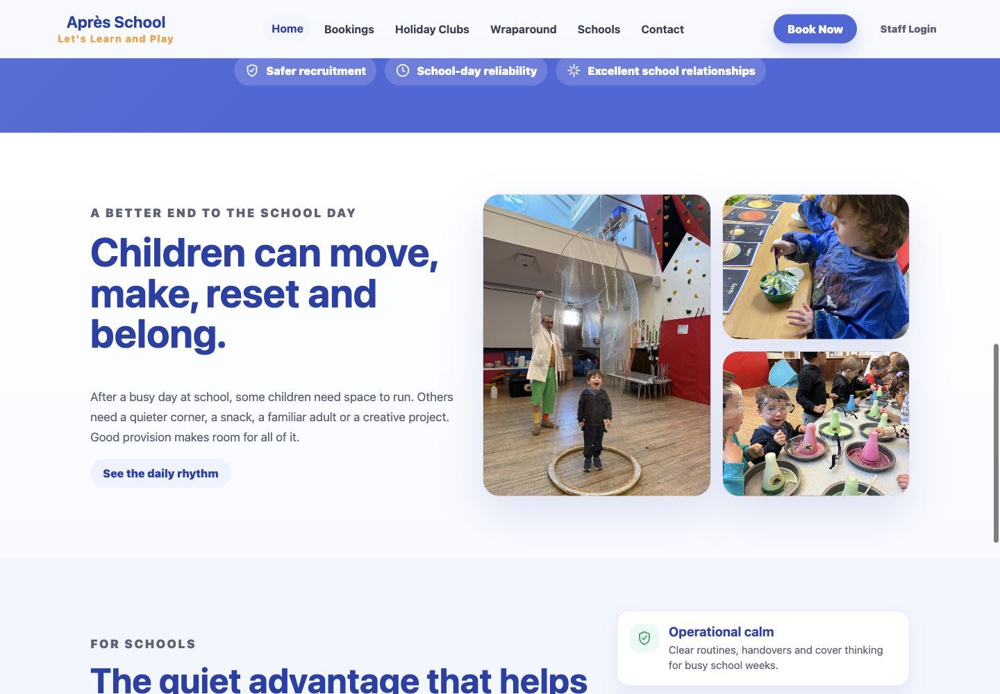

Childcare Services
Public pages for wraparound care, holiday clubs, policies, FAQs, recruitment and parent information.
Portfolio Project
A live website for wraparound care, holiday clubs and school-age childcare.
The Après School site helps families understand childcare options, policies, payments and booking routes while supporting the operational work that sits behind safe childcare delivery.
Live Site
A current public view of the live Après School website.

Page Gallery
A deeper look at the public sections supporting parents, schools and booking journeys.



Features
Public pages for wraparound care, holiday clubs, policies, FAQs, recruitment and parent information.
Families can move from service information into booking routes for care and holiday activity options.
Support for childcare voucher and tax-free childcare information, reducing repeated parent queries.
Booking features are in beta, with the goal of making class and activity reservations easier to manage.
Problems Solved
Childcare websites need to answer parent questions, support school relationships and protect the team from repeated manual admin.
Parents can understand wraparound care, holiday clubs, policies and payment routes before making contact.
School-facing content explains the service offer and gives partners a clearer sense of the operating model.
Admin planning is centred on records, attendance, bookings, policies and parent communication.
Admin Area
The admin area is intended to remove the everyday friction that comes with childcare operations: records, policies, attendance, bookings, payments and communication all need to be easier to find, update and act on.
Project Direction
The next stage is to keep refining class booking, parent information and admin visibility so the service is easier to run as it grows.